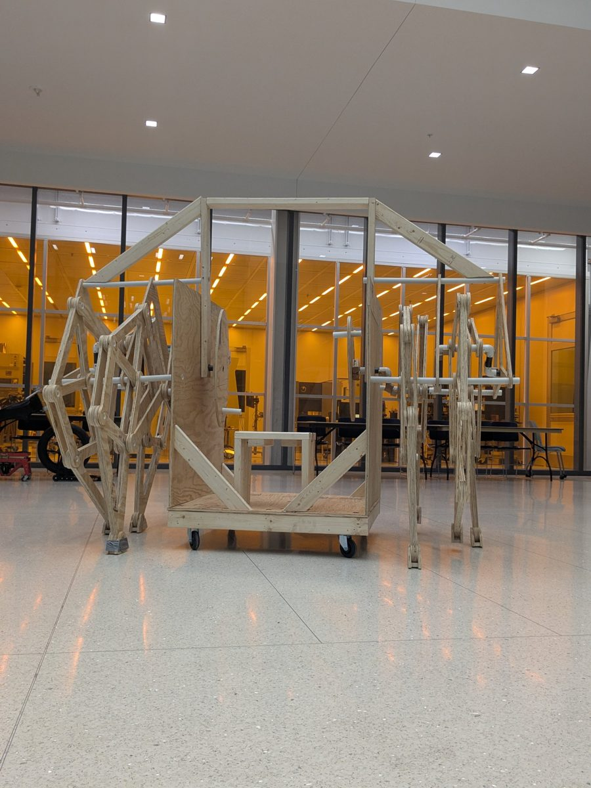
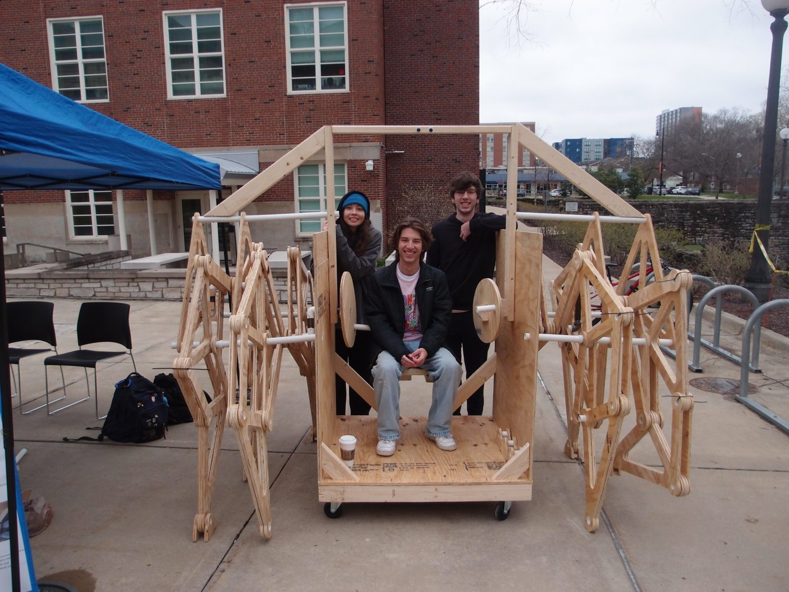
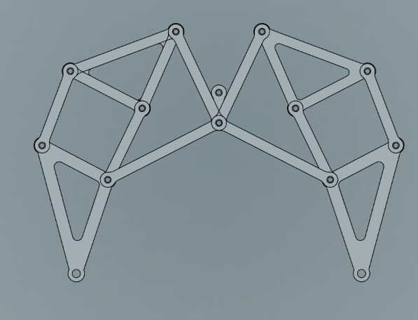
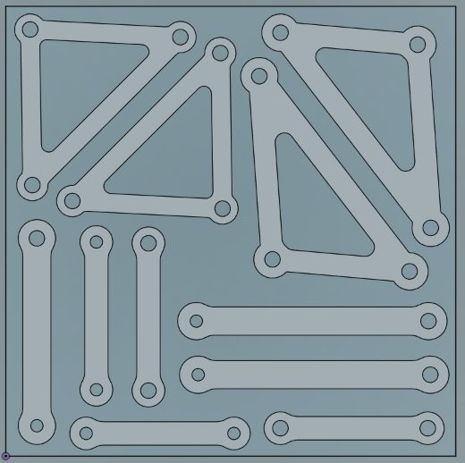
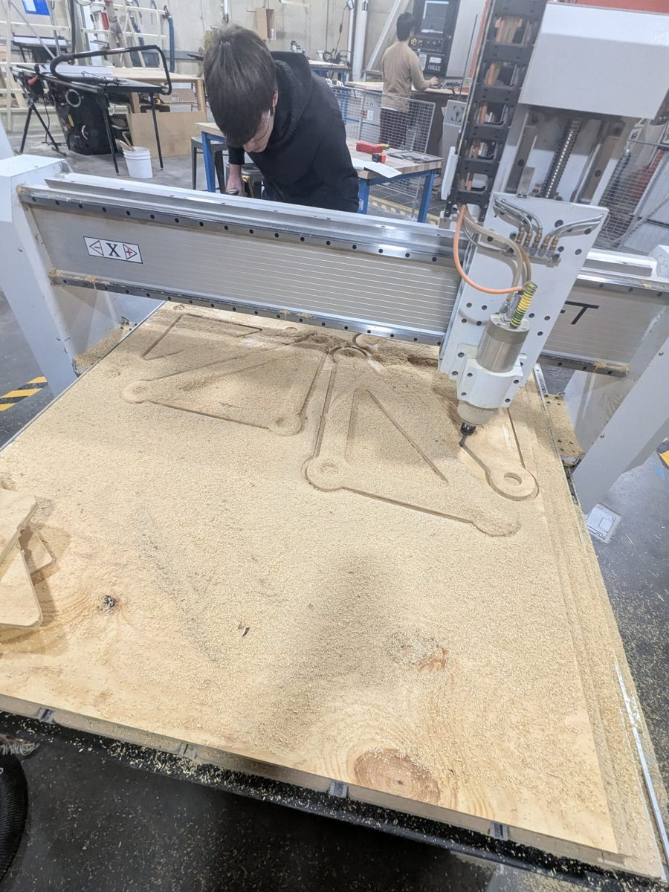
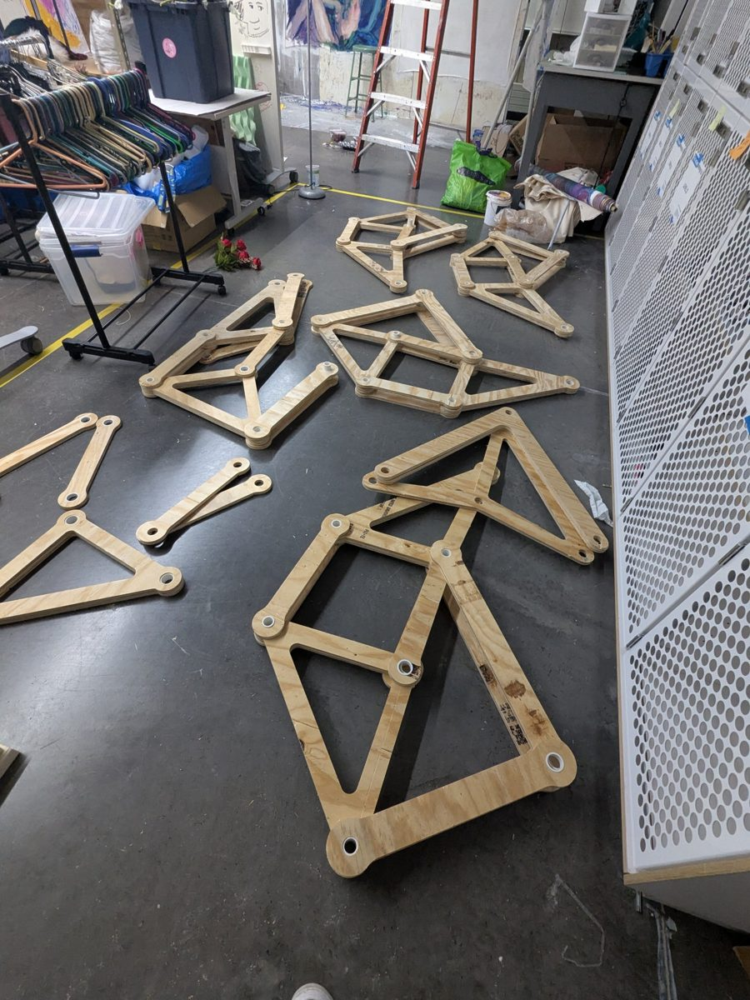
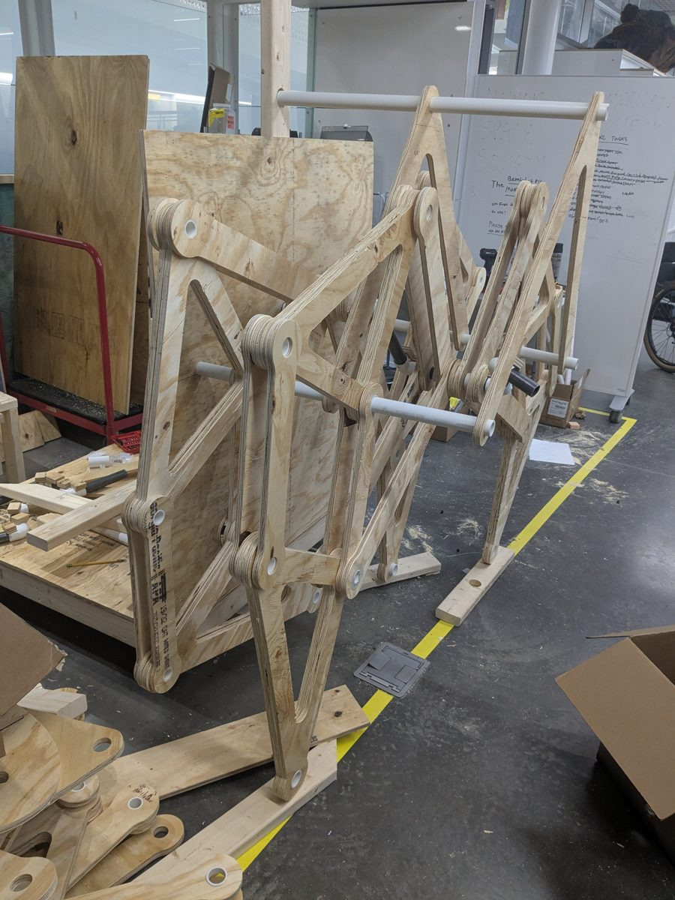
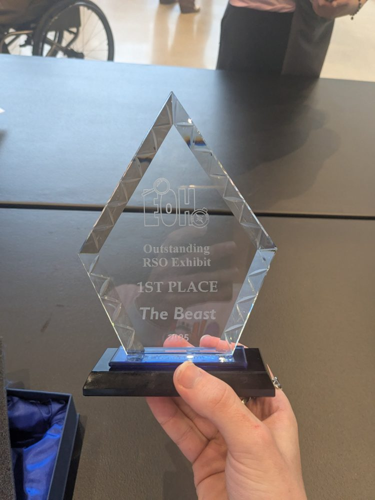

Walking Linkage Machine
"The Beast": a rideable, roughly 8-foot walking machine built on Jansen linkages, made almost entirely from CNC-cut plywood and PVC on a $300 budget for UIUC's Engineering Open House.

Problem / Goal
Engineering Open House is Grainger Engineering's yearly fair, where students show thousands of visitors what they've been building. I proposed this project through ASME mostly because a giant rideable walking machine sounded like a really fun thing to build. It also fit the event well, since something huge that moves in a way people don't expect stops kids (and adults) in their tracks.
The design is a sit-on walker about the size of an 8-foot cube. A rider turns hand cranks that drive the crankshafts, and each crankshaft runs a pair of Jansen linkage legs, two pairs on each side. The whole machine was heavy, so four wheels at the corners of the base carry the weight while the legs go through their walking motion. The hard constraint was a $300 budget for the whole machine, which set most of our material choices.
My Role
This was my project from start to finish. I proposed it, led a team of 9 (a mix of friends and club members who joined along the way), and split up the work during ASME's shared build sessions. I also did most of the hands-on work: I helped with the CAD and did nearly all of the fabrication, which meant learning to run a CNC router from scratch and spending a lot of hours at the machine.
Design Process
- Linkage geometry. Theo Jansen already worked out the link ratios for a smooth walking gait, so we didn't need to re-derive them. We scaled his proportions up to a size that could carry a rider, modeled the links and crankshafts in Fusion 360, and built the rest of the frame by hand.
- Low-friction joints. The joints between links were made from two sizes of PVC pipe, with cut-to-length tubes pressed into the plywood, so the links rotated PVC-on-PVC instead of wood-on-wood. This cut the friction a lot, and our first test leg moved smoothly.
- Dialing in the fit. To get a true press fit, I cut a sizing coupon with 20–30 holes in small diameter steps and tested the PVC in each one. We picked the size that needed a mallet to drive the tube in, so it would stay snug.
- CNC fabrication. All of the links came from seven 4'×8' plywood sheets cut on the CNC router. It took a lot of trial and error (and LOTS of ruined parts) to get toolpaths, hold-down, and cut settings that worked. When parts started lifting during cuts, we switched from an upcut to a downcut bit.
- Frame and cranks. The crankshafts were metal pipe, joined with PVC elbows to form the offset crank throws. The elbows were a budget choice, and they turned out to be the weak point.
Results
In testing, it worked: I rode it and cranked it myself, and the legs went through the full Jansen walking motion. At Open House, it drew a crowd the whole time, and the kids were mesmerized by it. The Beast won 1st place for Outstanding RSO Exhibit at EOH 2025.
Getting there took some recovery. Midway through fabrication, our CNC bit went missing from the lab, and every part cut with the new one came out with loose joints. My best explanation: the old bit was worn slightly undersized, our sizing coupon was tuned to it, and the fresh bit cut true to size.
The bigger problem was the PVC elbows. They carried a lot of the machine's weight and the forces from walking, and they cracked during testing. Replacements cracked too. After the first day of the expo, we bought metal elbows and rebuilt about half of one leg with them. We raised that leg off the ground so visitors could crank it and watch the linkage motion up close, and it ran as a reliable demo for all of day two.
Tools Used
Fusion 360, CNC router, hand and power tools.
Lessons Learned
When something in the process changes, test again. Our sizing coupon only matched the bit we tuned it on, and after the swap every joint came out loose. Recutting the coupon with the new bit would have taken a few minutes and caught the problem right away.
The PVC elbows were trying to transmit more torque than they could handle. They were the cheapest part of the crankshafts but carried the most load, so next time that's where I'd spend the budget first.






